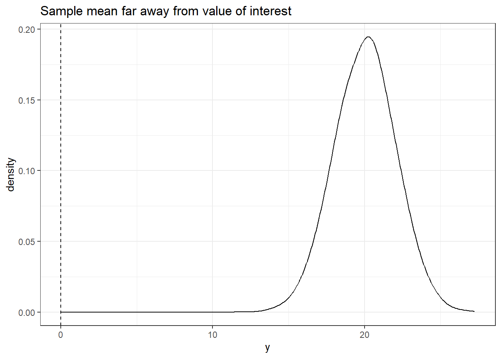
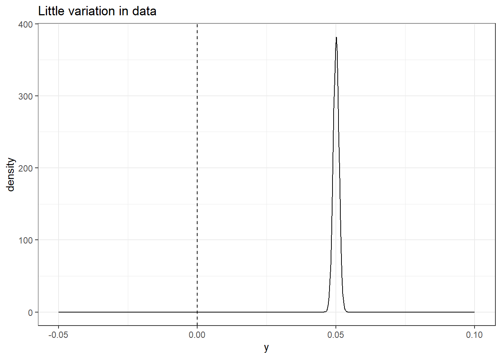
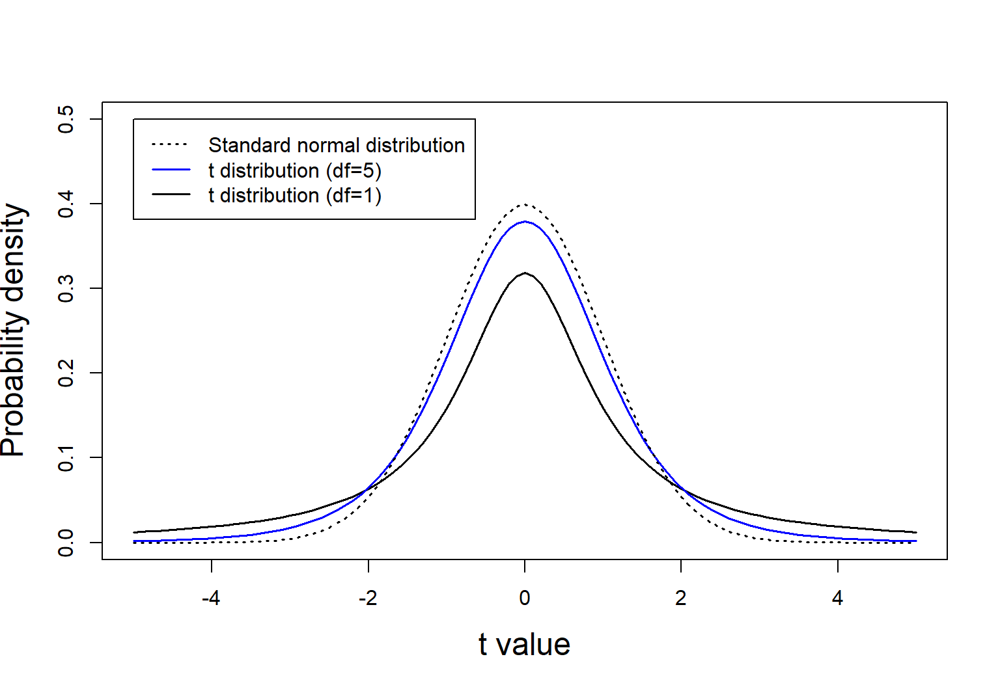
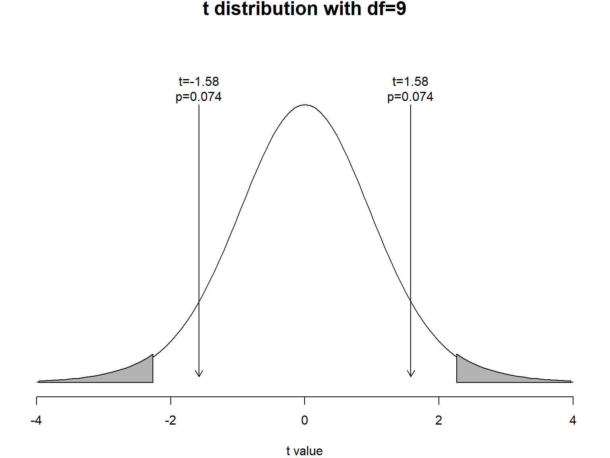
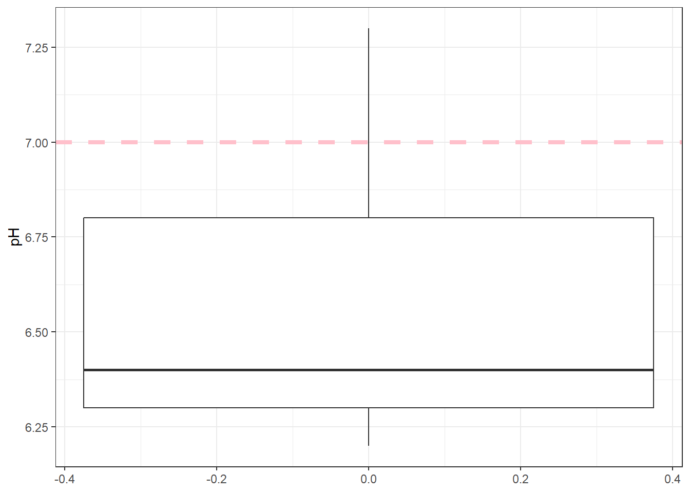
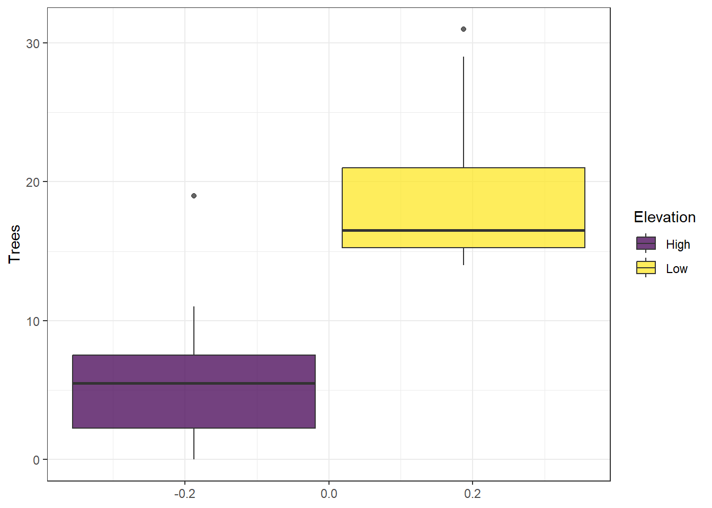
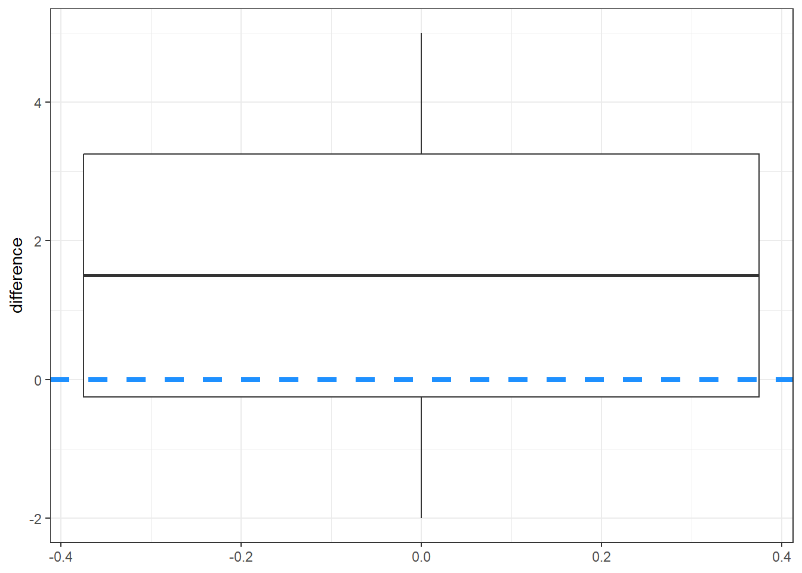

library(tidyverse)Lecture 06: T-test
1 Overview
Introduce T-tests including their history and application. We will discuss the concept of Null hypothesis testing. Finally, we will practice applying three main types of T-tests.
2 Setup
2.0.1 Libraries
2.0.2 Data
caterpillar <- read.csv("data/caterpillar.csv",
stringsAsFactors = TRUE)3 Lecture Outline
3.1 T-tests
3.1.1 T-test overview
Is my sample different from…:
A Value of interest?
Another sample of data?
General formula of t-test:
\[t_{statistic} = \frac{difference}{variation}\]
No difference: \(t_{statistic} = 0\)
There is a difference: \(t_{statistic} \ne 0\)
But how different from 0?
More on that later
3.1.1.1 What makes a big t-statistic?
- Large difference between means
- i.e., 0 vs. 20
- Big denominator
set.seed(3987)
y2 <- rnorm(10000, sd = 2,mean = 20)
ydf <- data.frame(y = c(y2))
ggplot(ydf, aes(x = y)) +
geom_density(alpha = 0.5, adjust = 2) +
theme_bw() +
geom_vline(xintercept = 0,
linetype = "dashed") +
labs(title = "Sample mean far away from value of interest")
- Little variation within group(s)
- 0 vs, 0.05, but all values are ~ 0.05
- small numerator
set.seed(3987)
y3 <- rnorm(10000, sd = 0.001, mean = 0.05)
ydf <- data.frame(y = c(y3))
ggplot(ydf, aes(x = y)) +
geom_density(alpha = 0.5, adjust = 2) +
theme_bw() +
xlim(c(-0.05, 0.1)) +
geom_vline(xintercept = 0,
linetype = "dashed") +
labs(title = "Little variation in data")
3.1.2 History
t-test developed by William Sealy Gossett
Worked at Guinness, wanted to test quality of stout
Very small sample sizes ( \(n \le 4\) )
Uses the t-distribution, which can be thought of as a small-sample-size version of a standard normal distribution
Published under pseudonym Student because company policy prevented employees from publishing scientific papers
3.1.3 T-distribution
t-distribution is a small-sample-size version of standard normal distribution
with fewer samples, there is more uncertainty
this uncertainty is represented in “fat tails”
curve(dt(x, 1), -5, 5, ylim=c(0, 0.5),
xlab="t value", ylab="Probability density",
cex.lab=1.5, lwd=1.5)
curve(dt(x, 5), -5, 5, add=TRUE, col="blue", lwd=1.5)
curve(dnorm(x, 0, 1), -5, 5, add=TRUE, lty=3, lwd=1.5)
legend(-5, 0.5, c("Standard normal distribution", "t distribution (df=5)", "t distribution (df=1)"),
lty=c(3, 1, 1), col=c("black", "blue", "black"), lwd=1.5)
3.1.4 Types of T-tests
- One-sample
- Is my sample different from a value of interest?
- i.e., stream pH, human body temperature
- Two-sample
- Are my two samples of data different?
- i.e., pH in mined vs. un-mined streams? Is body temperature different between males and females, or sick and healthy groups?
- Paired
- Are two measurements on the same subject different?
- i.e., before/after drug treatment, or two streams (mined/un-mined) in one valley
3.2 Null Hypothesis Testing (NHT)
Formal approach to assessing if sample data represents a statistically significant difference, or is due to sampling error.
requires two hypotheses:
The null, \(H_0\), which is no difference/relationship/effect
Alternative, \(H_A\), which is that there is some difference/relationship/effect
Hypotheses refer to the populations
3.3 One-sample T-Test
- Is my sample different from a value of interest?
3.3.1 Hypotheses
\[\large H_0: \mu = \mu_0\]
\[\large H_a : \mu \neq \mu_0\]
Note that this is a two-tailed test
- There is also a one-tailed alternative
All hypotheses in this course will be two-tailed
This class takes a linear model approach
- NOTE hypotheses for a linear model are slightly modified:
\[\large H_0: \mu-\mu_0 = 0\]
\[\large H_a : \mu-\mu_0 \neq 0\]
3.3.2 General Procedure
Draw a random sample from a population
Calculate the mean and standard error of the mean (SEM)
Compute a \(t_{statistic}\)
\[ t_{statistic} = \frac{\bar{y} - \mu_0}{SEM}\]Compare the \(t_{statistic}\) with a critical value ( \(t_{critical}\)
If \(|t_{statistic}| > |t_{critical}|\) we Reject the NULL hypothesis
If \(|t_{statistic}| < |t_{critical}|\) we FAIL to Reject the NULL hypothesis (FTR)
- Use \(t_{statistic}\) to compute a \(p_{value}\)
If \(p < \alpha\): REJECT
If \(p > \alpha\): FTR
3.3.2.1 Example of a t-distribution with t-stat and t-critical
- t-distribution with df = 9
- t-stat = \(\pm 1.9\)
- t-critical \(\pm 2.26\)
op <- par(mai=c(0.8, 0.2, 0.2, 0.2))
curve(dt(x, df=18), -4, 4, xlab="t value", ylab="", yaxt="n",
ylim=c(0,0.5),
frame=FALSE , main="t distribution with df=9", cex.main=1.5)
xs1 <- seq(qt(.025, df=9), -4, by=-0.1)
ys1 <- dt(xs1, df=9)
xs2 <- seq(qt(.975, df=9), 4, by=0.1)
ys2 <- dt(xs2, df=9)
polygon(c(xs1, rev(xs1)), c(rep(0, length(xs1)), rev(ys1)), col=gray(0.7))
polygon(c(xs2, rev(xs2)), c(rep(0, length(xs2)), rev(ys2)), col=gray(0.7))
text(-1.58, dt(0,9), "t=-1.58\np=0.074", pos=3)
text(1.58, dt(0,9), "t=1.58\np=0.074", pos=3)
arrows(-1.58, dt(0,18), -1.58, dt(-3,18), length=0.1)
arrows(1.58, dt(0,18), 1.58, dt(3,18), length=0.1)
par(op)3.3.3 Manual Procedure
3.3.4 One sample t-test: Stream pH
- Streams should have an approximately neutral pH of 7.
- Let’s look at some simulated data and formally tests whether or not the average stream pH is significantly different from 7.
- Here, the value of interest is \(\mu_0 = 7\)
3.4 Formal Hypotheses
\[H_0: \mu = 7\] \[H_A: \mu \ne 7\]
- Since our Alternative hypothesis has \(\ne\) in it, this is a 2-tailed test.
- We have to consider that pH could be higher or lower than our null value of 7.
We can express this as a simple linear model:
\[\text{pH}_i = \mu + \epsilon_i\]
where \(\text{pH}_i\) is a single observation of stream pH,
\(\mu\) is the population mean,
\(\epsilon_i\) is the deviation from the expected value.
Further, we expect the deviations to be distributed normally:
\[\epsilon \sim N(0, \sigma)\]
3.5 Analysis: Manual
- Load simulated data into R as a vector
# simulated data values
pH <- c(6.2, 6.8, 7.3, 6.4, 6.3)- Plot the data with
geom_boxplot(). ggplot()requires the data object to be a data.frame, we will quickly convert our vectorpHinside of the function.- Add a dashed line to indicate where our value of interest (7) is.
ggplot(data = data.frame(pH = pH),
aes(y = pH)) +
geom_boxplot() +
geom_hline(yintercept = 7,
linewidth = 1.5,
linetype = "dashed",
color = "pink") +
theme_bw()
3.5.1 Manual Procedure
We will calculate all necessary variables manually, and then compare it to using the
lm()function.Recall that we calculate a one-sample t-statistic with the following:
\[t_{statistic} =\frac{\bar{y} - \mu_{0} }{SEM_y}\]
- Where \(\bar{y}\) is the sample mean
- \(\mu_0\) is the value of interest (pH = 7)
- \(SEM\) is calculated as \(s / \sqrt(n)\).
- Let’s calculate these values in R and store them as objects.
pH_bar <- mean(pH)
pH_bar[1] 6.6mu_0 <- 7
mu_0[1] 7pH_sd <- sd(pH)
pH_sd[1] 0.4527693pH_sem <- pH_sd / sqrt(length(pH))
pH_sem[1] 0.2024846- calculate the t-statistic
t_stat <- (pH_bar - mu_0) / pH_sem
t_stat[1] -1.975459- calculate the t-critical value for this t-distribution.
- Use the
qt()function. - This is similar to the
qnorm()function we used previously for the normal distribution, - now we are looking at the t-distribution.
- for
qt(), we need to supply the quantile (0.025) and the degrees of freedom (df = n - 1 = 4). - The standard \(\alpha\) value is 0.05, but since this is a 2-tailed test we have to divide it by 2 (hence 0.025) in order to account for both tails.
t_crit <- qt(0.025, df = 4)
round(t_crit, 2)[1] -2.78Test if
t_statvalue id \(\ge\) our critical valueNote that we are going to use the absolute values so that we do not need to worry about using the proper > or < with negative numbers.
abs(t_stat) > abs(t_crit)[1] FALSE- It is not
- so we fail to reject our null hypothesis.
- We conclude that stream pH is NOT different from 7
- We can also calculate a p-value for our
t_criticalvalue by using thept()function. - We first calculate the probability of observing out
t_stat, and then multiply it by 2 since this is a 2-tailed test. - Also, we are going to use the absolute value of our
t_statand set thelower.tail = FALSEargument withinpt(). - This ensures that we don’t need to worry about mixing up our \(+\) and \(-\) signs when calculating a p-value.
one_samp_p_val <- pt(abs(t_stat), df = 4, lower.tail = FALSE) * 2
one_samp_p_val[1] 0.1194206our p-value is \(0.12\) which is \(\ge\) \(\alpha = 0.05\)
This is in agreement with t-stat and t-critical above, so we still Fail to reject our null and conclude that stream pH is not different from 7
Note that results from p-values and t-critical values should always agree
If they don’t, you calculated one of the two incorrectly
3.5.2 lm() Procedure
- We can perform a one-sample t-test by fitting an intercept-only model
\[y_i = \beta_0 + \epsilon_i\] Remember that
\[E[y] = \beta_0\]
3.5.3 Hypotheses for \(\beta_0\)
Null hypothesis:
\[\large H_0: \beta_0 = 0\]
Alternative hypothesis:
\[\large H_A: \beta_0 \ne 0\]
3.5.4 Hypotheses for T-test
\[\large H_0: \mu-\mu_0 = 0\]
\[\large H_a : \mu-\mu_0 \neq 0\]
We can use the
lm()function to automatically calculate our values and test the hypothesis formally.Recall that
pHis our observations of data, and our null value is 7.When we run a one-sample t-test in
lm(), we have to subtract the value of interest from our data.Review the numerator in the formula for the one-sample t-statistic above.
one_sample_fit <- lm(pH - mu_0 ~ 1)
# remember that pH is a vector
# if pH was a column in our df (data.frame), the model would be:
# lm(pH - mu_0 ~ 1, data = df)
summary(one_sample_fit)
Call:
lm(formula = pH - mu_0 ~ 1)
Residuals:
1 2 3 4 5
-0.4 0.2 0.7 -0.2 -0.3
Coefficients:
Estimate Std. Error t value Pr(>|t|)
(Intercept) -0.4000 0.2025 -1.975 0.119
Residual standard error: 0.4528 on 4 degrees of freedom- Reprint the values we calculated by hand and locate them in the output table
- note that we are subtracting mu_0 from pH_bar to put it on the same scale as our
(Intercept)estimate in the table:
pH_bar - mu_0[1] -0.4pH_sd[1] 0.4527693pH_sem[1] 0.2024846t_crit[1] -2.776445one_samp_p_val[1] 0.11942063.5.5 Notes on P-values
A p-value tells us how likely the null hypothesis is, given your observations
A p-value does not tell us how much evidence there is in favor of a particular difference in means
Our conclusion must be to either reject or “fail to reject” the null hypothesis
3.5.6 Interpretation
- Regardless of if you calculated manually or with
lm(), our interpretation sentence would be:
Based on our data, we estimate that the mean (\(\pm\) SE) pH in streams near Grand Junction is 6.6 (\(\pm\) 0.2), and we fail to reject the null hypothesis that stream pH is equal to 7 (One-sample t-test, \(t_{statistic} = -1.96, df = 4, p = 0.12\)).
3.5.7 You should now be able to complete problem 1 in the homework assignment
3.6 Two-sample T-Test
We want to determine if two population means differ
The null hypothesis is:
\(\large H_0 : \mu_1 = \mu_2\) OR \(\large H_0 : \mu_1 - \mu_2 = 0\)
- The Alternative hypothesis is:
\(\large H_a : \mu_1 \neq \mu_2\) OR \(\large H_0 : \mu_1 - \mu_2 \ne 0\)
- Appropriate when:
- The two samples, one from each population, are independent
- Both populations are (approximately) normally distributed
- The population variances are unknown but are the same for both populations
3.6.1 T-statistic for two-sample T-test
\[\large t_{stat} = \frac{\bar{y}_1 -\bar{y}_2}{SEDM}\] - Where:
\[\large SEDM = \sqrt{SEM_1^2 + SEM^2_2}\]
3.6.2 Example data: Tree densities
Is there a difference in tree densities at high and low elevations?
\(\large n=10\) plots are sampled using randomly located belt transects 100m long \(\times\) 10m wide at both high and low elevations
tree_df <- data.frame(Trees = c(16, 14, 18, 17, 29,
31, 14, 16, 22, 15,
2, 11, 6, 8, 0,
3, 19, 1, 6, 5),
Elevation = factor(
rep(c("Low", "High"),
each = 10)))
ggplot(tree_df,
aes(y = Trees,
fill = Elevation)) +
geom_boxplot(alpha = 0.75) +
theme_bw() +
scale_fill_viridis_d()
- Note that the grouping variable (
Elevation) is a factor
- It could also be a character
- If it’s continuous, your
lm()below will be a linear regression - Hint for the homework: Make sure your grouping variable is a character or a factor!
3.6.3 lm() Overivew
- Linear model with a categorical grouping variable
\[E[y_j] = \beta_0 + \beta_1*x_{1j}\]
- Where \(\beta_0\) is the expected value of \(y_{reference}\)
- \(beta_1\) is the estimated difference between our reference and other group
3.6.3.1 Null and alternative hypotheses for \(\beta_0\)
- Where \(\beta_0\) is the expected value of \(y_{reference}\)
\[\large H_0: \beta_0 = 0\]
Alternative hypothesis:
\[\large H_A: \beta_0 \ne 0\] - In other words, the formal test in lm() for \(\beta_0\) is whether or not the average of our reference group is 0 or not - We are rarely interested in this hypothesis when we have predictor variables
3.6.3.2 Null and alternative hypotheses for \(\beta_1\)
- \(beta_1\) is the estimated difference between our reference and other group
\[\large H_0: \beta_1 = 0\]
Alternative hypothesis:
\[\large H_A: \beta_1 \ne 0\] - In other words, the formal test in lm() for \(\beta_1\) is whether or not the differences in averages of our reference group is 0 or not - This is the two-sample t-test hypothesis:
\(\large H_0 : \mu_1 - \mu_2 = \beta_1 = 0\)
\(\large H_0 : \mu_1 - \mu_2 = \beta_1 \ne 0\)
3.6.4 lm() Procedure
- Let’s fit the model
- This is where it’s important to ensure that your grouping vatriable is not numeric
two_sample_fit <- lm(Trees ~ Elevation, data = tree_df)
summary(two_sample_fit)
Call:
lm(formula = Trees ~ Elevation, data = tree_df)
Residuals:
Min 1Q Median 3Q Max
-6.100 -4.125 -1.700 2.125 12.900
Coefficients:
Estimate Std. Error t value Pr(>|t|)
(Intercept) 6.100 1.866 3.270 0.00426 **
ElevationLow 13.100 2.638 4.965 0.00010 ***
---
Signif. codes: 0 '***' 0.001 '**' 0.01 '*' 0.05 '.' 0.1 ' ' 1
Residual standard error: 5.9 on 18 degrees of freedom
Multiple R-squared: 0.578, Adjusted R-squared: 0.5545
F-statistic: 24.65 on 1 and 18 DF, p-value: 0.00010013.6.5 Interpreting lm() output
- The summary of the
lm()has a lot of information. - What we are primarily focused on here is the
elevationLowrow. - The Estimate represents the difference between the two elevation groups.
- (Since “Low” is in the name, we can deduce that the
(Intercept)is the estimated value for the other elevation group, “High”.) - The the p-value is less than 0.05 so we reject the null
- Note that p-values are reported if they are > 0.01
- If they are less than that, they are rounded as:
- p < 0.01 or p < 0.001 as appropriate match what we calculated by hand above.
- The R^2 value tells us how much of the variation in response variable (
Trees) is explained by the predictor variable (Elevation). - In this case, approximately 55% of the variation is explained by elevation (This is rather high for one categorical value, maybe because I simulated these values).
3.6.5.1 Interpretation sentences
3.6.5.1.1 \(\beta_0\)
- We are rarely interested in this formal test, but here is the sentence for it:
Based on the data, we estimate that the mean (\(\pm\) SE) tree density at high elevations is
6.1(\(\pm\)1.9). Likewise, we can reject the null hypothesis and accept the alternative that tree densities at high elevations are not equal to 0(\(t_{statistic} = 3.27, df = 18, p < 0.01\)).
3.6.5.1.2 \(\beta_1\)
- This is for the difference between the two groups
- This is directly testing the two-sample t-test hypotheses:
Based on the data, we estimate that the mean (\(\pm\) SE) difference in tree densities between high and low elevations is 13.1 (\(\pm\) 2.6). Likewise, we can reject the null hypothesis and accept the alternative that tree densities differ based on elevation (\(t_{statistic} = 4.97, df = 18, p < 0.001\)).
3.6.6 You should now be able to complete problem 2 and 3 in the homework assignment
3.7 Paired T-Test
Used when two measurements are taken on each experimental unit
Measure before and after a drug treatment
What is the effect of mining effluent on paired streams?
- i.e., two streams in the same valley
Problem can be analyzed by taking differences of each pair and then conducting a one-sample t-test
3.7.1 Hypotheses
\(\large H_0 :\mu_d = 0\)
\(\large H_a :\mu_d \ne 0\)
Note that we take the difference before fitting the model
3.7.2 Data
- Here is where we will be using the
caterpillardata
as_tibble(caterpillar)# A tibble: 24 × 3
plot_number treatment caterpillar_count
<int> <fct> <int>
1 1 control 23
2 1 bt_herbicide 19
3 2 control 18
4 2 bt_herbicide 18
5 3 control 29
6 3 bt_herbicide 24
7 4 control 22
8 4 bt_herbicide 23
9 5 control 33
10 5 bt_herbicide 31
# ℹ 14 more rowsThis is data from a controlled experiment looking at herbicide effects on non-target caterpillars.
Twelve plots were split, and each side was randomly assigned as a
controlor herbicide treatment (bt_herbicide).Microbial pesticide Bacillus thuringiensis
Each plot is an experimental unit and the treatments are “paired” within it.
Surveys of non target caterpillars were performed by counting caterpillars on samples of 10,000 leaves on each plot (
caterpillar_count).Because the plots were paired, what we’re interested in is the difference in
caterpillar_countbetweenbt_herbicideandcontrolplots.If the herbicide had no effect, then we would expect both plot types to have the same number of caterpillars.
In other, words, the difference in counts between each plot would be 0.
3.7.3 Data setup
- We need to calculate the difference between the two treatments.
- If the values were stored in different columns, we would use
mutate()to subtract one column from the other. - However, the way this data is organized, we need to subtract row 2 from row 1, row 4 from row 3, etc.
- Based on the
dplyrfunctions we’ve learned so far, there is no simple solution apparent. - Luckily, there is a special helper function called
diff()that we can use inside ofmutate(). - First, we need to group the data so that it uses the correct values.
- Here, we want to know what the effect is within plots, so we will use
group_by(plot_number).
caterpillar |>
group_by(plot_number) |>
mutate(difference = -diff(caterpillar_count))# A tibble: 24 × 4
# Groups: plot_number [12]
plot_number treatment caterpillar_count difference
<int> <fct> <int> <int>
1 1 control 23 4
2 1 bt_herbicide 19 4
3 2 control 18 0
4 2 bt_herbicide 18 0
5 3 control 29 5
6 3 bt_herbicide 24 5
7 4 control 22 -1
8 4 bt_herbicide 23 -1
9 5 control 33 2
10 5 bt_herbicide 31 2
# ℹ 14 more rows- We can see that this performed the correct calculation, but the numbers are duplicated (one per each row of the data)
- Switch
mutate()tosummarize() - This will keep just one value per “group”
cat_diff <- caterpillar |>
group_by(plot_number) |>
summarize(difference = -diff(caterpillar_count))
cat_diff# A tibble: 12 × 2
plot_number difference
<int> <int>
1 1 4
2 2 0
3 3 5
4 4 -1
5 5 2
6 6 -2
7 7 1
8 8 2
9 9 3
10 10 4
11 11 1
12 12 -13.7.4 lm() Procedure for paired t-test
- Before we analyze the data, let’s plot it with a reference line of 0 (i.e., our \(H_0\))
ggplot(cat_diff,
aes(y = difference)) +
geom_boxplot() +
geom_hline(yintercept = 0,
color = "dodgerblue",
linewidth = 1.5,
linetype = "dashed") +
theme_bw()
- Because we already calculated the difference between the two treatments, we are fitting an “intercept-only” model as in the one sample t-test at the beginning of lab.
- However, in this case, our value of interest (\(\mu_0\)) is 0, which is the default in the
lm()function, so we do not need to subtract anything from the response side of the formula.
paired_fit <- lm(difference ~ 1, data = cat_diff)
summary(paired_fit)
Call:
lm(formula = difference ~ 1, data = cat_diff)
Residuals:
Min 1Q Median 3Q Max
-3.50 -1.75 0.00 1.75 3.50
Coefficients:
Estimate Std. Error t value Pr(>|t|)
(Intercept) 1.5000 0.6455 2.324 0.0403 *
---
Signif. codes: 0 '***' 0.001 '**' 0.01 '*' 0.05 '.' 0.1 ' ' 1
Residual standard error: 2.236 on 11 degrees of freedom- Remember that the null hypothesis for the intercept is:
\[\large \beta_0 = 0\]
Since \(\beta_0\) in our model is the pre-calculated differences, we are actually interested in this hypothesis
Our estimated intercept (\(\pm\) SE) is 1.5 \(\pm\) 0.65, and we can reject the null hypothesis and conclude that there was a difference in the number of caterpillars between the two treatments (\(t_{statistic} = 2.32, df = 11, p = 0.04\)).
3.7.5 You should now be able to complete problem 4 in the homework assignment.
4 Summary
- T-tests are useful for to see if our sample data are “different”
- Linear models are a flexible tool which can be used to perform statistical tests
- It is important to consider how your data is set up (or needs to be modified)
- Likewise, it’s important to consider the null and alternative hypotheses for \(\beta_0\) and \(\beta_1\)
- By understanding the format of our data going into
lm(), and the statistical hypotheses for our \(\beta\)’s, we can correctly interpret the results of our statistical tests.